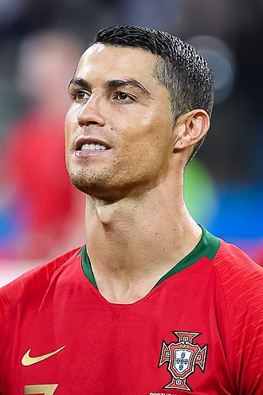
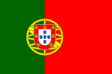

Kriştiano Ronaldo
Los Santos Aveiro (port. Cristiano dos Santos Averio; 5 fevral 1985, Funşal— Mançester Yunayted futbol klubunun oyunçusu və Portuqaliya yığmasının kapitanı olan portuqaliyalı futbolçu.
Ronaldonun Mançester Yunayted klubundan "Real Madrid"ə keçidi üçün 100 milyon€ (100 milyon avro) ödənilib. Bu da onu futbol tarixinin ən bahalı oyunçusuna çevirdi. Real Madrid ilə bağladığı müqaviləyə əsasən ildə 12 milyon avro qazanan futbolçu, dünyanın ən çox qazanan futbolçusudur. 2018-ci ildə İtaliyanın "Yuventus" klubuna keçmişdir. 2021-ci ildə Mançester Yunayted klubuna geri dönüş edib. Kriştiano Ronaldo futbol karyerasında 807 qol vurub

Umumi Melumat
Tam adi Cristiano Ronaldo dos Santos Aveiro
Ləqəbi: CR7
Doğum tarixi 5 fevral 1985
Vətəndaşlığı:

Portuqaliya
Boyu:1.89
Çəkisi 85 kq
Ana sehifeye qayit